64 mT → 3 T MRI synthesis
ReDiff
Reliability-guided Brownian bridges that turn portable 64 mT scans into 3 T-quality images and mark where the result should not be trusted.
The problem
Sharp is not the same as correct.
Recovering a 3 T image from a 64 mT scan is ill-posed, and unevenly so: some regions keep enough evidence, others do not. Diffusion bridges inject the same randomness everywhere, so their outputs can look plausible and still contain anatomy that was never scanned.
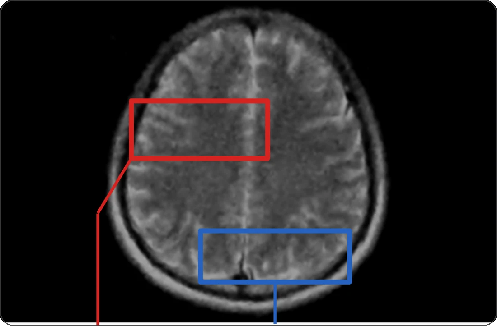
Invented texture
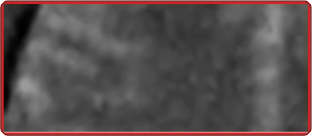
synthesized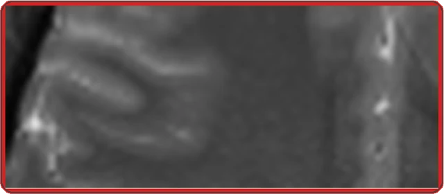
3 T referenceSpurious boundary
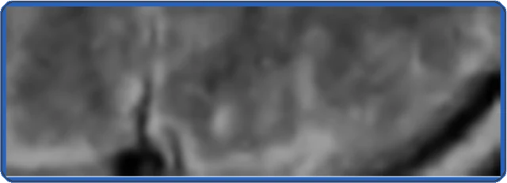
synthesized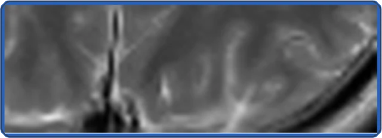
3 T referenceMethod
Anchor. Two bridges. One map.
ReDiff makes generation bold only where the evidence is weak, and turns the disagreement between two differently guided samplers into an uncertainty map.
Start from a coarse 3 T estimate
A frozen residual network maps the 64 mT image to a coarse estimate that absorbs the contrast and intensity change. The bridge starts there, so it only has to add residual detail.
b = x + fψ(x)
Be bold only where the anchor is weak
A reliability network predicts where the anchor is wrong. A second bridge scales its noise by that map, with the same endpoints and step rule as the standard bridge.
g = 1 + γu
Average two, keep the gap
One sample per bridge. Their mean is the output, and averaging lowers the squared error by exactly their disagreement at every pixel, which becomes the map U.
ŷ = (ŷ₁ + ŷ₂) / 2 · U = ((ŷ₁ − ŷ₂) / 2)²
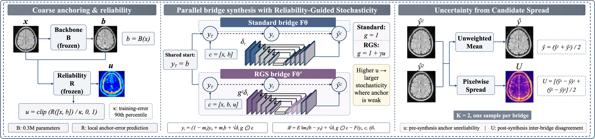
Watch both bridges sample
Both start at the anchor. Noise peaks in the middle of the bridge, and the reliability-guided bridge adds more where the anchor is unreliable. Their paths part almost only there. At t = 0 the two candidates are averaged, and what they still disagree on is the uncertainty map.
Compare
From a 64 mT scan to 3 T detail.
Drag across the image to compare. All four images show the same private T2 test slice.
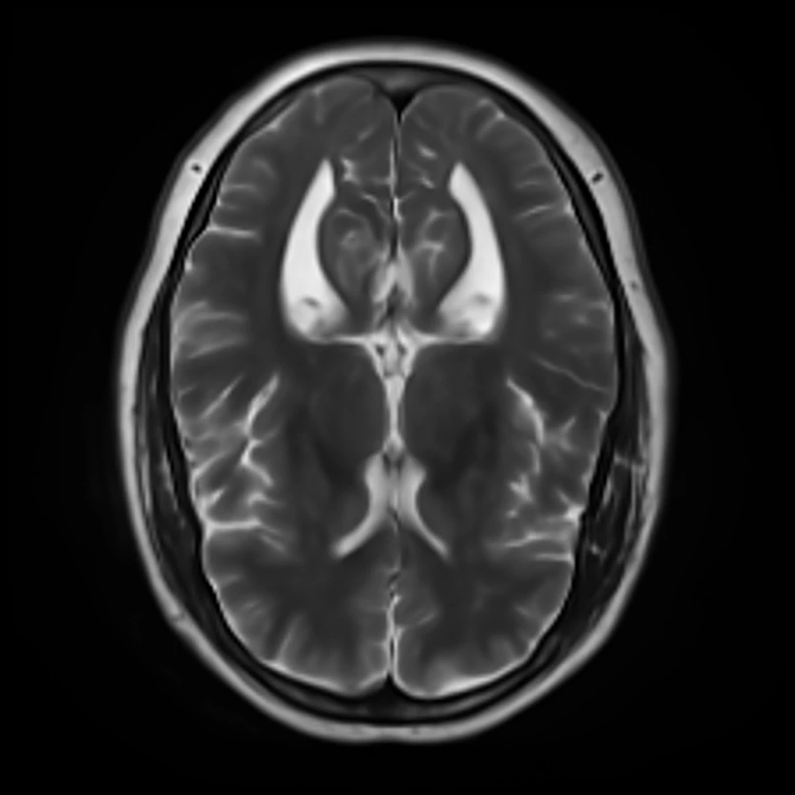
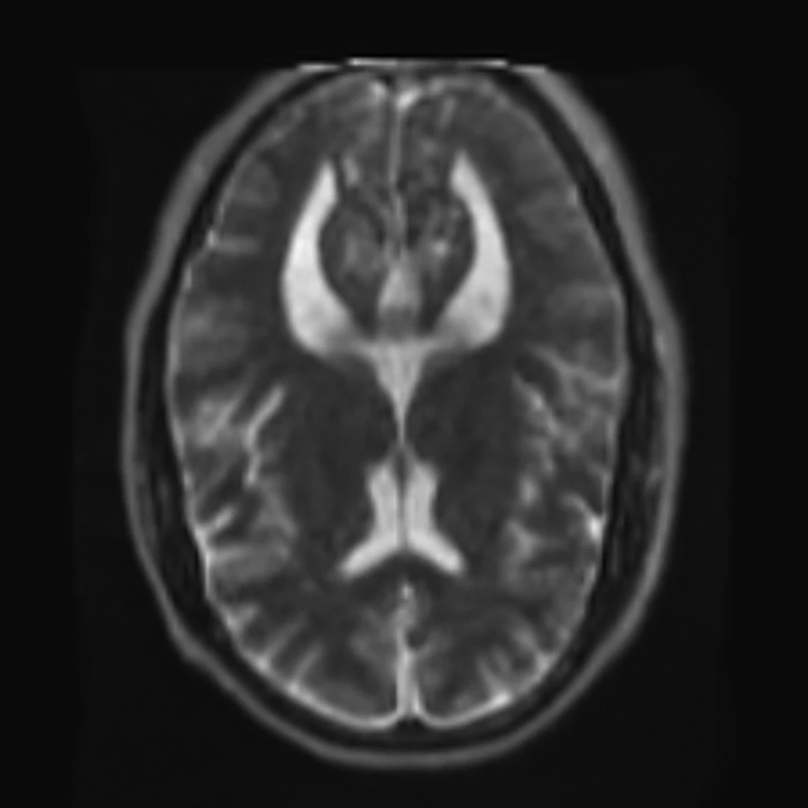
64 mT inputReDiffPSNR on this slice
Private T2 test slice #0535, PSNR as reported in the paper.
Results
Best PSNR in every contrast.
On two paired 64 mT-to-3 T datasets, ReDiff has the best PSNR and LPIPS in every contrast against GAN-, transformer- and diffusion-based methods.
Mean PSNR over the six contrast × dataset cells
dB, higher is better · hover a bar for its value
Uncertainty
It knows when it fails.
Each clip replays sampling. On a typical slice the two bridges end up agreeing, so the uncertainty stays dark. On a failure they still disagree at the end, in the same places as the error.
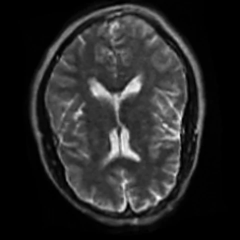
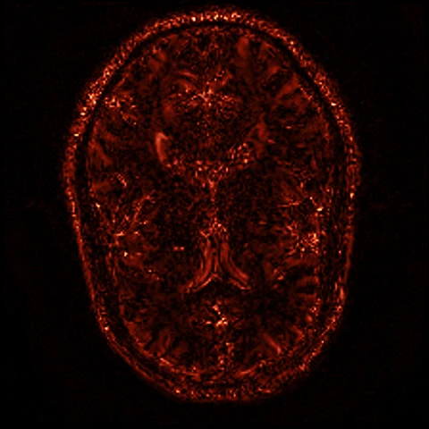
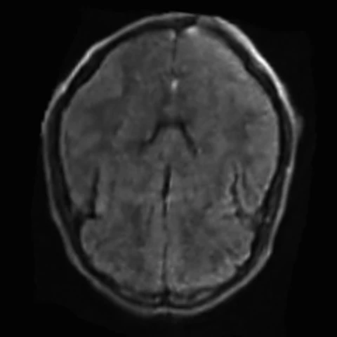
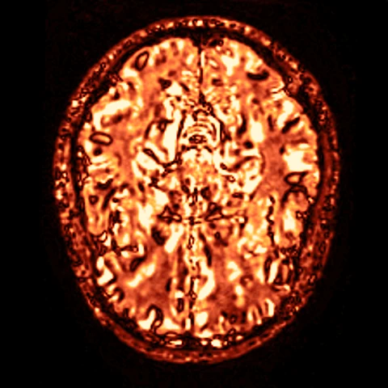
Downstream
Anatomy you can measure.
SynthSeg segmentations of whole synthesized FLAIR volumes, test subject 13. From the raw 64 mT scan most deep structures are lost. From ReDiff they come back and match 3 T.
Every structure, one by one
The same subject, pulled apart into the nine deep structures of the Dice analysis. Each structure lights up with its Dice and volume against the subject’s own 3 T segmentation. Over all eleven structures, mean Dice rises from 0.24 to 0.89.